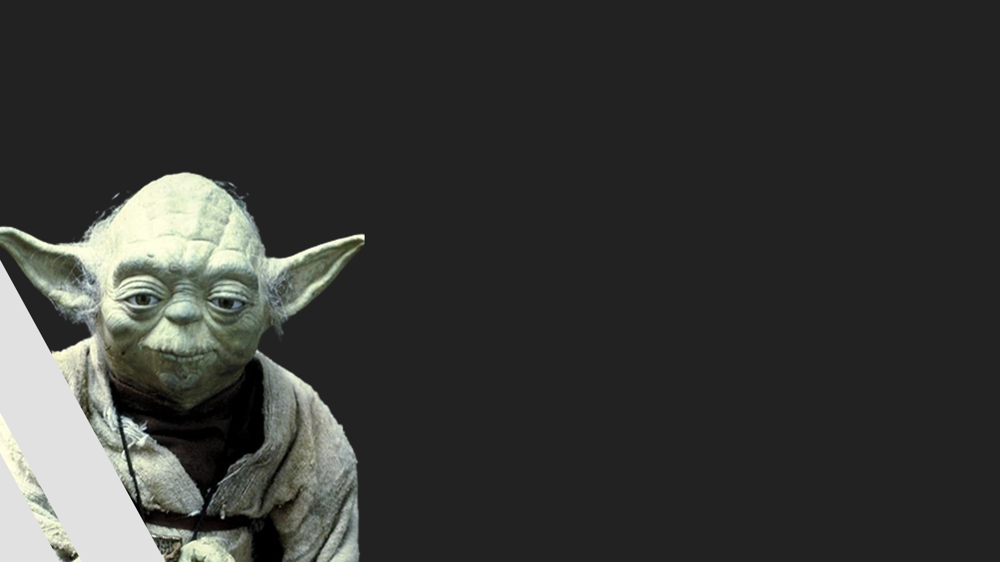

ordem Jedi
ordem Jedi
O que é?
A Ordem Jedi foi uma antiga organização monástica de guarnição da paz unificada pela sua crença na Força, especificamente o lado luminoso. Os Jedi eram os guardiões da paz e da justiça na República Galáctica por milhares de anos antes das Guerras Clônicas.
Principais integrantes
Arca
jeth
era um Arkaniano com sangue Sephi que serviu a República Galáctica como Sentinela do sistema Onderon em nome da Ordem Jedi. Jeth foi reverenciado como um dos Jedi mais sábios e mais poderosos de sua época, e foi saudado por seus irmãos como um campeão da raça Arkaniana. Jeth residiu primeiramente em seu planeta natal, Arkania, onde ele havia ensinado muitos seres mais proeminentes nas artes Jedi.
exar
kun
Exar Kun começou como um simples estudante, aprendendo sob o venerado Mestre Jedi Vodo-Siosk Baas. Como os aprendizes do Lado Sombrio que se seguiram através da história, a impaciência e ansiedade determinou todo o treinamento de Kun. Com seu orgulho sem limites e sua fome por ascender além de suas habilidades Jedi, Kun abandonou seu mestre e empreendeu uma jornada ao mundo de Onderon. Lá ele encontrou o espírito de Freedon Nadd, um antigo Sith, e um novo mestre.
ulic
qel-droma
Durante a Guerra Sith, viu seu mestre morrer e começou a estudar um Holocron Sith, acreditando ser necessário aprender a magia Sith para eliminá-los da galáxia. Ele o Exar Kun foram escolhidos para retomar o grande império Sith. Após uma série de batalhas envolvendo os Sith, Jedi e as tropas da República, Ulic matou o próprio irmão Cay Qel-Droma em Ossus e diante do arrependimento conseguiu ser neutralizado pelos Jedi. Ulic perdeu sua sensibilidade à força, mas resolveu colaborar na destruição de Exar Kun.

Luke
Skywalker
um homem humano sensível à Força, foi um lendário Mestre Jedi que lutou na Guerra Civil Galáctica durante o reinado do Império Galáctico. Junto com seus companheiros, a princesa Leia Organa e o general Han Solo, Skywalker serviu como um revolucionário ao lado da Aliança para Restauração da República uma organização comprometida com a queda do Império Galáctico e a restauração da democracia.

yoda
Yoda foi um dos mais célebres e poderosos Mestres Jedi de todos os tempos, conhecido pela sua enorme sabedoria, conhecedor profundo da Força e habilidades em combates com sabre de luz. Yoda foi um dos membros do Alto Conselho Jedi durante os últimos séculos da República Galáctica e deteve o título de Grande Mestre Jedi da Ordem Jedi antes, durante e após as devastantes Guerras Clônicas.
zayne
carrick
Zayne Carrick era um humano que foi padawan Jedi durante as Guerras Mandalorianas. Filho de um banqueiro e uma jardineira, Carrick mal foi aceito na Ordem Jedi, com seu nível de sensibilidade à Força descrito como "marginal" (à margem, quase nulo), e passou seus dias de padawan no Enclave Jedi em Dantooine. Mais tarde, ele foi designado como padawan para o Mestre Jedi Lucien Draay. Sem o conhecimento de Carrick e do Conselho do Enclave Jedi de Dantooine, Draay foi um membro do Pacto Jedi.